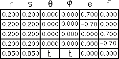
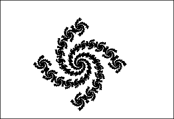

IFS Animations
To illustrate how a rotation can create a spiral, here we step the rotation of the middle piece from 20° to -20° in steps of 5°.
Again, note the motion within motion of pieces within pieces.

